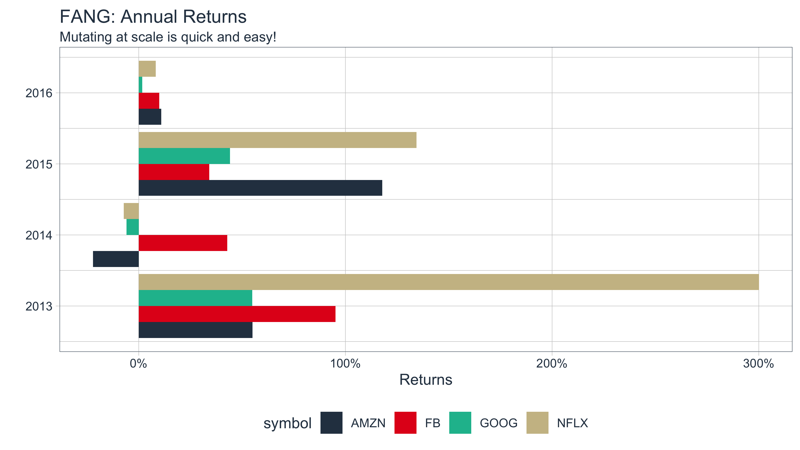

vignettes/TQ03-scaling-and-modeling-with-tidyquant.Rmd
TQ03-scaling-and-modeling-with-tidyquant.RmdDesigned for the data science workflow of the
tidyverse
The greatest benefit to tidyquant is the ability to apply the data science workflow to easily model and scale your financial analysis as described in R for Data Science. Scaling is the process of creating an analysis for one asset and then extending it to multiple groups. This idea of scaling is incredibly useful to financial analysts because typically one wants to compare many assets to make informed decisions. Fortunately, the tidyquant package integrates with the tidyverse making scaling super simple!
All tidyquant functions return data in the tibble (tidy data frame) format, which allows for interaction within the tidyverse. This means we can:
%>%) for chaining operationsdplyr and tidyr: select, filter, group_by, nest/unnest, spread/gather, etcpurrr: mapping functions with map
We’ll go through some useful techniques for getting and manipulating groups of data.
A very basic example is retrieving the stock prices for multiple stocks. There are three primary ways to do this:
## # A tibble: 756 x 8
## symbol date open high low close volume adjusted
## <chr> <date> <dbl> <dbl> <dbl> <dbl> <dbl> <dbl>
## 1 AAPL 2016-01-04 25.7 26.3 25.5 26.3 270597600 24.4
## 2 AAPL 2016-01-05 26.4 26.5 25.6 25.7 223164000 23.8
## 3 AAPL 2016-01-06 25.1 25.6 25.0 25.2 273829600 23.4
## 4 AAPL 2016-01-07 24.7 25.0 24.1 24.1 324377600 22.4
## 5 AAPL 2016-01-08 24.6 24.8 24.2 24.2 283192000 22.5
## 6 AAPL 2016-01-11 24.7 24.8 24.3 24.6 198957600 22.9
## 7 AAPL 2016-01-12 25.1 25.2 24.7 25.0 196616800 23.2
## 8 AAPL 2016-01-13 25.1 25.3 24.3 24.3 249758400 22.6
## 9 AAPL 2016-01-14 24.5 25.1 23.9 24.9 252680400 23.1
## 10 AAPL 2016-01-15 24.0 24.4 23.8 24.3 319335600 22.5
## # … with 746 more rowsThe output is a single level tibble with all or the stock prices in one tibble. The auto-generated column name is “symbol”, which can be pre-emptively renamed by giving the vector a name (e.g. stocks <- c("AAPL", "GOOG", "FB")) and then piping to tq_get.
First, get a stock list in data frame format either by making the tibble or retrieving from tq_index / tq_exchange. The stock symbols must be in the first column.
stock_list <- tibble(stocks = c("AAPL", "JPM", "CVX"), industry = c("Technology", "Financial", "Energy")) stock_list
## # A tibble: 3 x 2
## stocks industry
## <chr> <chr>
## 1 AAPL Technology
## 2 JPM Financial
## 3 CVX EnergySecond, send the stock list to tq_get. Notice how the symbol and industry columns are automatically expanded the length of the stock prices.
stock_list %>% tq_get(get = "stock.prices", from = "2016-01-01", to = "2017-01-01")
## # A tibble: 756 x 9
## stocks industry date open high low close volume adjusted
## <chr> <chr> <date> <dbl> <dbl> <dbl> <dbl> <dbl> <dbl>
## 1 AAPL Technology 2016-01-04 25.7 26.3 25.5 26.3 270597600 24.4
## 2 AAPL Technology 2016-01-05 26.4 26.5 25.6 25.7 223164000 23.8
## 3 AAPL Technology 2016-01-06 25.1 25.6 25.0 25.2 273829600 23.4
## 4 AAPL Technology 2016-01-07 24.7 25.0 24.1 24.1 324377600 22.4
## 5 AAPL Technology 2016-01-08 24.6 24.8 24.2 24.2 283192000 22.5
## 6 AAPL Technology 2016-01-11 24.7 24.8 24.3 24.6 198957600 22.9
## 7 AAPL Technology 2016-01-12 25.1 25.2 24.7 25.0 196616800 23.2
## 8 AAPL Technology 2016-01-13 25.1 25.3 24.3 24.3 249758400 22.6
## 9 AAPL Technology 2016-01-14 24.5 25.1 23.9 24.9 252680400 23.1
## 10 AAPL Technology 2016-01-15 24.0 24.4 23.8 24.3 319335600 22.5
## # … with 746 more rowsGet an index…
tq_index("DOW")
## # A tibble: 30 x 8
## symbol company identifier sedol weight sector shares_held local_currency
## <chr> <chr> <chr> <chr> <dbl> <chr> <dbl> <chr>
## 1 UNH UnitedHea… 91324P10 29177… 0.0752 Health… 5464167 USD
## 2 HD Home Depo… 43707610 24342… 0.0665 Consum… 5464167 USD
## 3 CRM salesforc… 79466L30 23105… 0.0595 Inform… 5464167 USD
## 4 AMGN Amgen Inc. 03116210 20236… 0.0537 Health… 5464167 USD
## 5 MCD McDonald'… 58013510 25507… 0.0529 Consum… 5464167 USD
## 6 MSFT Microsoft… 59491810 25881… 0.0499 Inform… 5464167 USD
## 7 GS Goldman S… 38141G10 24079… 0.0484 Financ… 5464167 USD
## 8 V Visa Inc.… 92826C83 B2PZN… 0.0459 Inform… 5464167 USD
## 9 HON Honeywell… 43851610 20204… 0.0403 Indust… 5464167 USD
## 10 MMM 3M Company 88579Y10 25957… 0.0397 Indust… 5464167 USD
## # … with 20 more rows…or, get an exchange.
tq_exchange("NYSE")
Send the index or exchange to tq_get. Important Note: This can take several minutes depending on the size of the index or exchange, which is why only the first three stocks are evaluated in the vignette.
## # A tibble: 8,157 x 15
## symbol company identifier sedol weight sector shares_held local_currency
## <chr> <chr> <chr> <chr> <dbl> <chr> <dbl> <chr>
## 1 UNH United… 91324P10 2917… 0.0752 Healt… 5464167 USD
## 2 UNH United… 91324P10 2917… 0.0752 Healt… 5464167 USD
## 3 UNH United… 91324P10 2917… 0.0752 Healt… 5464167 USD
## 4 UNH United… 91324P10 2917… 0.0752 Healt… 5464167 USD
## 5 UNH United… 91324P10 2917… 0.0752 Healt… 5464167 USD
## 6 UNH United… 91324P10 2917… 0.0752 Healt… 5464167 USD
## 7 UNH United… 91324P10 2917… 0.0752 Healt… 5464167 USD
## 8 UNH United… 91324P10 2917… 0.0752 Healt… 5464167 USD
## 9 UNH United… 91324P10 2917… 0.0752 Healt… 5464167 USD
## 10 UNH United… 91324P10 2917… 0.0752 Healt… 5464167 USD
## # … with 8,147 more rows, and 7 more variables: date <date>, open <dbl>,
## # high <dbl>, low <dbl>, close <dbl>, volume <dbl>, adjusted <dbl>You can use any applicable “getter” to get data for every stock in an index or an exchange! This includes: “stock.prices”, “key.ratios”, “key.stats”, and more.
Once you get the data, you typically want to do something with it. You can easily do this at scale. Let’s get the yearly returns for multiple stocks using tq_transmute. First, get the prices. We’ll use the FANG data set, but you typically will use tq_get to retrieve data in “tibble” format.
data("FANG") FANG
## # A tibble: 4,032 x 8
## symbol date open high low close volume adjusted
## <chr> <date> <dbl> <dbl> <dbl> <dbl> <dbl> <dbl>
## 1 FB 2013-01-02 27.4 28.2 27.4 28 69846400 28
## 2 FB 2013-01-03 27.9 28.5 27.6 27.8 63140600 27.8
## 3 FB 2013-01-04 28.0 28.9 27.8 28.8 72715400 28.8
## 4 FB 2013-01-07 28.7 29.8 28.6 29.4 83781800 29.4
## 5 FB 2013-01-08 29.5 29.6 28.9 29.1 45871300 29.1
## 6 FB 2013-01-09 29.7 30.6 29.5 30.6 104787700 30.6
## 7 FB 2013-01-10 30.6 31.5 30.3 31.3 95316400 31.3
## 8 FB 2013-01-11 31.3 32.0 31.1 31.7 89598000 31.7
## 9 FB 2013-01-14 32.1 32.2 30.6 31.0 98892800 31.0
## 10 FB 2013-01-15 30.6 31.7 29.9 30.1 173242600 30.1
## # … with 4,022 more rowsSecond, use group_by to group by stock symbol. Third, apply the mutation. We can do this in one easy workflow. The periodReturns function is applied to each group of stock prices, and a new data frame was returned with the annual returns in the correct periodicity.
FANG_returns_yearly <- FANG %>% group_by(symbol) %>% tq_transmute(select = adjusted, mutate_fun = periodReturn, period = "yearly", col_rename = "yearly.returns")
Last, we can visualize the returns.
FANG_returns_yearly %>% ggplot(aes(x = year(date), y = yearly.returns, fill = symbol)) + geom_bar(position = "dodge", stat = "identity") + labs(title = "FANG: Annual Returns", subtitle = "Mutating at scale is quick and easy!", y = "Returns", x = "", color = "") + scale_y_continuous(labels = scales::percent) + coord_flip() + theme_tq() + scale_fill_tq()

Eventually you will want to begin modeling (or more generally applying functions) at scale! One of the best features of the tidyverse is the ability to map functions to nested tibbles using purrr. From the Many Models chapter of “R for Data Science”, we can apply the same modeling workflow to financial analysis. Using a two step workflow:
Let’s go through an example to illustrate.
In this example, we’ll use a simple linear model to identify the trend in annual returns to determine if the stock returns are decreasing or increasing over time.
First, let’s collect stock data with tq_get()
AAPL <- tq_get("AAPL", from = "2007-01-01", to = "2016-12-31") AAPL
## # A tibble: 2,518 x 8
## symbol date open high low close volume adjusted
## <chr> <date> <dbl> <dbl> <dbl> <dbl> <dbl> <dbl>
## 1 AAPL 2007-01-03 3.08 3.09 2.92 2.99 1238319600 2.59
## 2 AAPL 2007-01-04 3.00 3.07 2.99 3.06 847260400 2.64
## 3 AAPL 2007-01-05 3.06 3.08 3.01 3.04 834741600 2.62
## 4 AAPL 2007-01-08 3.07 3.09 3.05 3.05 797106800 2.64
## 5 AAPL 2007-01-09 3.09 3.32 3.04 3.31 3349298400 2.86
## 6 AAPL 2007-01-10 3.38 3.49 3.34 3.46 2952880000 2.99
## 7 AAPL 2007-01-11 3.43 3.46 3.40 3.42 1440252800 2.96
## 8 AAPL 2007-01-12 3.38 3.40 3.33 3.38 1312690400 2.92
## 9 AAPL 2007-01-16 3.42 3.47 3.41 3.47 1244076400 3.00
## 10 AAPL 2007-01-17 3.48 3.49 3.39 3.39 1646260000 2.93
## # … with 2,508 more rowsNext, come up with a function to help us collect annual log returns. The function below mutates the stock prices to period returns using tq_transmute(). We add the type = "log" and period = "monthly" arguments to ensure we retrieve a tibble of monthly log returns. Last, we take the mean of the monthly returns to get MMLR.
get_annual_returns <- function(stock.returns) { stock.returns %>% tq_transmute(select = adjusted, mutate_fun = periodReturn, type = "log", period = "yearly") }
Let’s test get_annual_returns out. We now have the annual log returns over the past ten years.
AAPL_annual_log_returns <- get_annual_returns(AAPL) AAPL_annual_log_returns
## # A tibble: 10 x 2
## date yearly.returns
## <date> <dbl>
## 1 2007-12-31 0.860
## 2 2008-12-31 -0.842
## 3 2009-12-31 0.904
## 4 2010-12-31 0.426
## 5 2011-12-30 0.228
## 6 2012-12-31 0.282
## 7 2013-12-31 0.0776
## 8 2014-12-31 0.341
## 9 2015-12-31 -0.0306
## 10 2016-12-30 0.118Let’s visualize to identify trends. We can see from the linear trend line that AAPL’s stock returns are declining.
AAPL_annual_log_returns %>% ggplot(aes(x = year(date), y = yearly.returns)) + geom_hline(yintercept = 0, color = palette_light()[[1]]) + geom_point(size = 2, color = palette_light()[[3]]) + geom_line(size = 1, color = palette_light()[[3]]) + geom_smooth(method = "lm", se = FALSE) + labs(title = "AAPL: Visualizing Trends in Annual Returns", x = "", y = "Annual Returns", color = "") + theme_tq()
Now, we can get the linear model using the lm() function. However, there is one problem: the output is not “tidy”.
##
## Call:
## lm(formula = yearly.returns ~ year(date), data = AAPL_annual_log_returns)
##
## Coefficients:
## (Intercept) year(date)
## 58.86281 -0.02915We can utilize the broom package to get “tidy” data from the model. There’s three primary functions:
augment: adds columns to the original data such as predictions, residuals and cluster assignmentsglance: provides a one-row summary of model-level statisticstidy: summarizes a model’s statistical findings such as coefficients of a regressionWe’ll use tidy to retrieve the model coefficients.
## # A tibble: 2 x 5
## term estimate std.error statistic p.value
## <chr> <dbl> <dbl> <dbl> <dbl>
## 1 (Intercept) 58.9 113. 0.520 0.617
## 2 year(date) -0.0291 0.0562 -0.518 0.618Adding to our workflow, we have the following:
get_model <- function(stock_data) { annual_returns <- get_annual_returns(stock_data) mod <- lm(yearly.returns ~ year(date), data = annual_returns) tidy(mod) }
Testing it out on a single stock. We can see that the “term” that contains the direction of the trend (the slope) is “year(date)”. The interpetation is that as year increases one unit, the annual returns decrease by 3%.
get_model(AAPL)
## # A tibble: 2 x 5
## term estimate std.error statistic p.value
## <chr> <dbl> <dbl> <dbl> <dbl>
## 1 (Intercept) 58.9 113. 0.520 0.617
## 2 year(date) -0.0291 0.0562 -0.518 0.618Now that we have identified the trend direction, it looks like we are ready to scale.
Once the analysis for one stock is done scale to many stocks is simple. For brevity, we’ll randomly sample ten stocks from the S&P500 with a call to dplyr::sample_n().
## # A tibble: 5 x 8
## symbol company identifier sedol weight sector shares_held local_currency
## <chr> <chr> <chr> <chr> <dbl> <chr> <dbl> <chr>
## 1 VNT Vontier C… 92888110 BH4G… 1.34e-4 Informa… 1420288 USD
## 2 ADI Analog De… 03265410 2032… 1.59e-3 Informa… 3870636 USD
## 3 SYF Synchrony… 87165B10 BP96… 5.21e-4 Financi… 5673466 USD
## 4 EVRG Evergy In… 30034W10 BFMX… 4.44e-4 Utiliti… 2403514 USD
## 5 AAL American … 02376R10 BCV7… 2.23e-4 Industr… 5244777 USDWe can now apply our analysis function to the stocks using dplyr::mutate and purrr::map. The mutate() function adds a column to our tibble, and the map() function maps our custom get_model function to our tibble of stocks using the symbol column. The tidyr::unnest function unrolls the nested data frame so all of the model statistics are accessable in the top data frame level. The filter, arrange and select steps just manipulate the data frame to isolate and arrange the data for our viewing.
stocks_model_stats <- stocks_tbl %>% select(symbol, company) %>% tq_get(from = "2007-01-01", to = "2016-12-31") %>% # Nest group_by(symbol, company) %>% nest() %>% # Apply the get_model() function to the new "nested" data column mutate(model = map(data, get_model)) %>% # Unnest and collect slope unnest(model) %>% filter(term == "year(date)") %>% arrange(desc(estimate)) %>% select(-term) stocks_model_stats
## # A tibble: 4 x 7
## # Groups: symbol, company [4]
## symbol company data estimate std.error statistic p.value
## <chr> <chr> <list> <dbl> <dbl> <dbl> <dbl>
## 1 AAL American Airlines G… <tibble [2,5… 0.142 0.0753 1.89 0.0958
## 2 EVRG Evergy Inc. <tibble [2,5… 0.0299 0.0131 2.28 0.0522
## 3 ADI Analog Devices Inc. <tibble [2,5… 0.0272 0.0295 0.920 0.385
## 4 SYF Synchrony Financial <tibble [611… -0.0359 0.115 -0.312 0.807We’re done! We now have the coefficient of the linear regression that tracks the direction of the trend line. We can easily extend this type of analysis to larger lists or stock indexes. For example, the entire S&P500 could be analyzed removing the sample_n() following the call to tq_index("SP500").
Eventually you will run into a stock index, stock symbol, FRED data code, etc that cannot be retrieved. Possible reasons are:
This becomes painful when scaling if the functions return errors. So, the tq_get() function is designed to handle errors gracefully. What this means is an NA value is returned when an error is generated along with a gentle error warning.
tq_get("XYZ", "stock.prices")
## [1] NAThere are pros and cons to this approach that you may not agree with, but I believe helps in the long run. Just be aware of what happens:
Pros: Long running scripts are not interrupted because of one error
Cons: Errors can be inadvertently handled or flow downstream if the users does not read the warnings
Let’s see an example when using tq_get() to get the stock prices for a long list of stocks with one BAD APPLE. The argument complete_cases comes in handy. The default is TRUE, which removes “bad apples” so future analysis have complete cases to compute on. Note that a gentle warning stating that an error occurred and was dealt with by removing the rows from the results.
## Warning: Problem with `mutate()` input `data..`.
## ℹ x = 'BAD APPLE', get = 'stock.prices': Error in getSymbols.yahoo(Symbols = "BAD APPLE", env = <environment>, : Unable to import "BAD APPLE".
## BAD APPLE download failed after two attempts. Error message:
## HTTP error 400.
## Removing BAD APPLE.
## ℹ Input `data..` is `purrr::map(...)`.## Warning: x = 'BAD APPLE', get = 'stock.prices': Error in getSymbols.yahoo(Symbols = "BAD APPLE", env = <environment>, : Unable to import "BAD APPLE".
## BAD APPLE download failed after two attempts. Error message:
## HTTP error 400.
## Removing BAD APPLE.## # A tibble: 5,438 x 8
## symbol date open high low close volume adjusted
## <chr> <date> <dbl> <dbl> <dbl> <dbl> <dbl> <dbl>
## 1 AAPL 2010-01-04 7.62 7.66 7.58 7.64 493729600 6.60
## 2 AAPL 2010-01-05 7.66 7.70 7.62 7.66 601904800 6.62
## 3 AAPL 2010-01-06 7.66 7.69 7.53 7.53 552160000 6.51
## 4 AAPL 2010-01-07 7.56 7.57 7.47 7.52 477131200 6.50
## 5 AAPL 2010-01-08 7.51 7.57 7.47 7.57 447610800 6.54
## 6 AAPL 2010-01-11 7.6 7.61 7.44 7.50 462229600 6.48
## 7 AAPL 2010-01-12 7.47 7.49 7.37 7.42 594459600 6.41
## 8 AAPL 2010-01-13 7.42 7.53 7.29 7.52 605892000 6.50
## 9 AAPL 2010-01-14 7.50 7.52 7.46 7.48 432894000 6.46
## 10 AAPL 2010-01-15 7.53 7.56 7.35 7.35 594067600 6.36
## # … with 5,428 more rowsNow switching complete_cases = FALSE will retain any errors as NA values in a nested data frame. Notice that the error message and output change. The error message now states that the NA values exist in the output and the return is a “nested” data structure.
## Warning: Problem with `mutate()` input `data..`.
## ℹ x = 'BAD APPLE', get = 'stock.prices': Error in getSymbols.yahoo(Symbols = "BAD APPLE", env = <environment>, : Unable to import "BAD APPLE".
## BAD APPLE download failed after two attempts. Error message:
## HTTP error 400.
##
## ℹ Input `data..` is `purrr::map(...)`.## Warning: x = 'BAD APPLE', get = 'stock.prices': Error in getSymbols.yahoo(Symbols = "BAD APPLE", env = <environment>, : Unable to import "BAD APPLE".
## BAD APPLE download failed after two attempts. Error message:
## HTTP error 400.## # A tibble: 5,439 x 9
## symbol date open high low close volume adjusted stock.prices
## <chr> <date> <dbl> <dbl> <dbl> <dbl> <dbl> <dbl> <lgl>
## 1 AAPL 2010-01-04 7.62 7.66 7.58 7.64 493729600 6.60 NA
## 2 AAPL 2010-01-05 7.66 7.70 7.62 7.66 601904800 6.62 NA
## 3 AAPL 2010-01-06 7.66 7.69 7.53 7.53 552160000 6.51 NA
## 4 AAPL 2010-01-07 7.56 7.57 7.47 7.52 477131200 6.50 NA
## 5 AAPL 2010-01-08 7.51 7.57 7.47 7.57 447610800 6.54 NA
## 6 AAPL 2010-01-11 7.6 7.61 7.44 7.50 462229600 6.48 NA
## 7 AAPL 2010-01-12 7.47 7.49 7.37 7.42 594459600 6.41 NA
## 8 AAPL 2010-01-13 7.42 7.53 7.29 7.52 605892000 6.50 NA
## 9 AAPL 2010-01-14 7.50 7.52 7.46 7.48 432894000 6.46 NA
## 10 AAPL 2010-01-15 7.53 7.56 7.35 7.35 594067600 6.36 NA
## # … with 5,429 more rowsIn both cases, the prudent user will review the warnings to determine what happened and whether or not this is acceptable. In the complete_cases = FALSE example, if the user attempts to perform downstream computations at scale, the computations will likely fail grinding the analysis to a hault. But, the advantage is that the user will more easily be able to filter to the problem childs to determine what happened and decide whether this is acceptable or not.